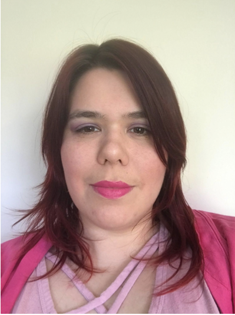

Megan Schwamb
SSSC Co-chair
Queen's University, Belfast

Meg has been a lecturer at Queen’s University Belfast since August 2019. Previously, she was an assistant scientist at Gemini Observatory’s Northern Operations Center for three years. Her research focuses on how solar systems are constructed and evolve through studies of Solar System and extrasolar planets using ground-based surveys and mining large astronomical/planetary science datasets via citizen science. She was a 2019 recipient of the AURA (Association of Universities for Research in Astronomy) Science Award. Meg was elected co-chair of the LSST Solar System Science Collaboration in 2017. She also currently serves on the Rubin Observatory Science Advisory Committee and the Rubin Observatory Survey Cadence Optimization Committee.